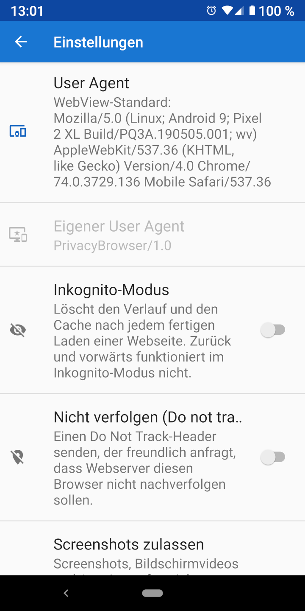

Wenn Internetbrowser sich mit Websites verbinden senden sie einen sog. User Agent, welcher den Browser und die Rendering-Möglichkeiten an die Website kommuniziert. Die Website kann diese Informationen nutzen, um zu entscheiden, welche Version der Website an den Browser übermittelt werden soll. Viele Websites haben beispielsweise verschiedene Versionen für Desktopcomputer mobile Browser.
Privacy Browser nutzt standardmäßig den auf dem Gerät in WebView integrierten User Agent. Sie können nachsehen, welcher es ist, wenn Sie in die Einstellungen gehen und den User Agent auf WebView-Standard stellen. Der Screenshot unten zeigt ein Nexus 6P mit Android 6.0.1 und installiertem Android System WebView 52.0.2743.98.
Im User Agent sind genügend Informationen, sodass manchmal nur einige wenige Besucher einer Website denselben haben. Wenn der User Agent mit einem anderen Teil von nicht-einmaligen Identifizierungsinformationen kombiniert wird, resultiert das oft in einem einmaligen "Fingerabdruck". Die Electronic Frontier Foundation hat ein Tool namens Panopticlick erstellt, um zu demonstrieren, wie viele Informationen aus diesen Quellen bezogen werden können. Wenn dieser Test mit aktiviertem Javascript ausgeführt wird wächst die Anzahl an Sammelband Informationen drastisch.

Privacy Browser erlaubt Ihnen den User Agent zu ändern. Es gibt einige vorgegebenen Optionen, die auf übliche Browser und Betriebssysteme zutreffen. Privacy Browser hat auÃerdem seinen eigenen User Agent, welcher ganz einfach PrivacyBrowser/1.0 ist. Beim Tracking gilt: Alles was selten ist, ist einfacher zu verfolgen. Wenn Privacy Browser bekannter wird und mehr Leute PrivacyBrowser/1.0 als User Agent nutzen wird es eine gute Wahl für Privatsphäre darstellen. Momentan ermöglicht das Wählen von etwas, das viele Klicks auf dem Server hat, wie Edge 13 auf Windows 10, das Untertauchen in der Menge der Nutzer. Firefox oder Chrome bieten weniger Privatsphäre, da sie automatisch aktualisiert werden und ihre Versionsnummer so schnell wechselt, sodass die in Privacy Browser eingepflegte Version wahrscheinlich schnell überholt wird und so oft aus der auf Server Logs auftauchenden Menge heraussticht.
Ein zweiter Grund für das Ãndern des User Agents ist das Ãberzeugen des Servers, dass er die Desktopversion der Website anzeigen soll, welche oftmals besser auf modernen Smartphones läuft als die mobile Seite. Für diesen Zweck funktioniert PrivacyBrowser/1.0 sehr gut, da Webserver für gewöhnlich die Desktopversion als Standardversion anzeigen, wenn sie keinen mobilen Browser als User Agent erhalten.
Androids WebView erlaubt keinen leeren User Agent. Wenn das der Fall ist, wird der Standard-User Agent an den Server gesandt.